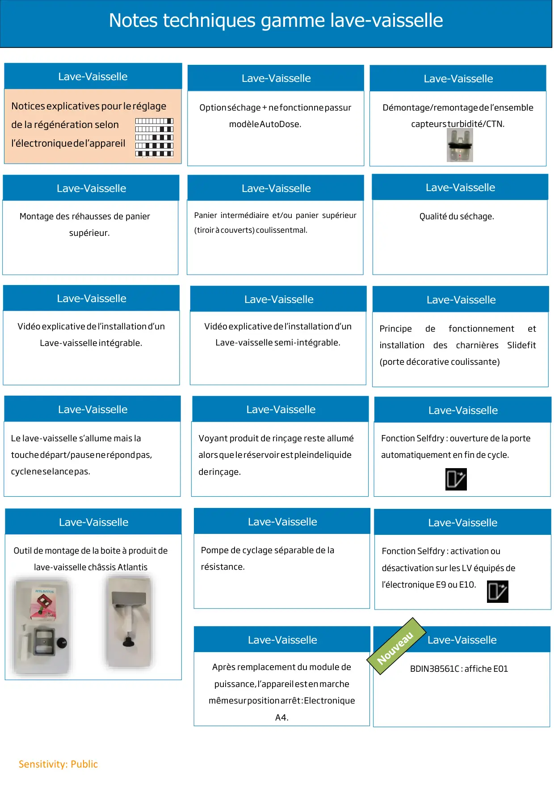

Lave-vaisselle

Sensitivity: PublicNotes techniques gamme lave-vaisselleMontage des réhausses de paniersupérieur.Voyant produit de rinçage reste alluméalors que le réservoir est plein de liquidede rinçage.Lave-VaisselleLe lave-vaisselle s’allume mais latouche départ/pause ne répond pas,cycle ne se lance pas.Lave-VaisselleVidéo explicative de l’installation d’unLave-vaisselle semi-intégrable.Lave-VaisselleVidéo explicative de l’installation d’unLave-vaisselle intégrable.Lave-VaisselleOption séchage + ne fonctionne pas surmodèle AutoDose.Après remplacement du module depuissance, l’appareil est en marchemême sur position arrêt : ElectroniqueA4.Fonction Selfdry : ouverture de la porteautomatiquement en fin de cycle.Lave-VaisselleLave-VaisselleLave-VaisselleLave-VaisselleLave-VaisselleLave-VaisselleQualité du séchage.Lave-VaissellePompe de cyclage séparable de larésistance.Panier intermédiaire et/ou panier supérieur(tiroir à couverts) coulissent mal.Fonction Selfdry : activation oudésactivation sur les LV équipés del’électronique E9 ou E10.Lave-VaisselleLave-VaissellePrincipedefonctionnementetinstallationdescharnièresSlidefit(porte décorative coulissante)Lave-VaisselleBDIN38561C : affiche E01Lave-VaisselleOutil de montage de la boite à produit delave-vaisselle châssis Atlantis
1 / 1Liens de ce document (16)
PDFInstructions de montage des réhausses de panier supérieur2 p.PDFNote Technique Demontage Remontage Capteur Turbidité CTN3 p.≡Régénération pour FLS et DriveMenu · 12 liensPDFVoyant liquide rinçage lave vaisselle Autodose reste allumé1 p.PDFVerrin de cire clapet de séchage DFN16330 et CRDFN163302 p.↗Vidéo explicative de l’installation d’unDrive (non copié)PDFFonction séchage + lave vaisselle AutoDose1 p.PDFModule Electronique A4 en AutoTest USINE1 p.PDFLAVE VAISSELLE fonction Selfdry ouverture de la porte auto en fin de cycle1 p.PDFNote technique paniers lave vaisselle coulissent mal1 p.PDFSéchage en lave vaisselle 21 p.PDFNote Information Lave Vaisselle Pompe de cyclage séparable de la résistance4 p.PDFActivation ou Désactivation Selfdry lave vaisselle E9 et E102 p.PDFLave vaisselle Note technique Principe charnière sliding door6 p.PDFNote Technique lave vaisselle Encastrable BDIN38561C E01 sur Afficheur1 p.PDFNote Technique lave vaisselle Atlantis = Changement de la boite à produits avec outil Beko3 p.